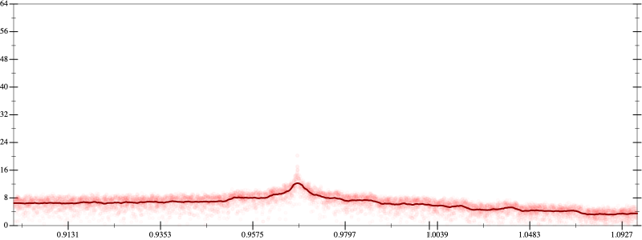
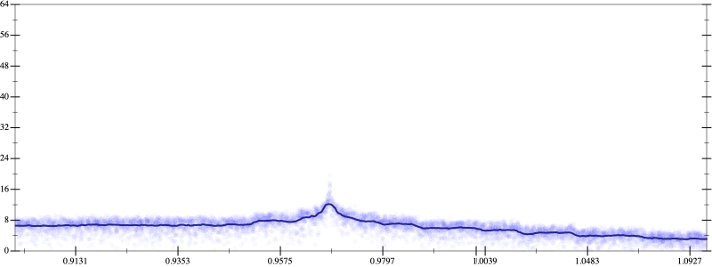
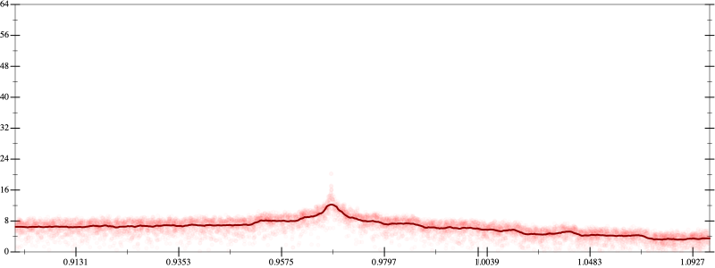
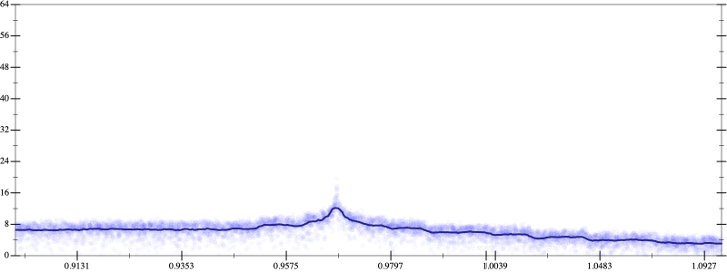

Initial program 6.3
\[\left(\left(\left(2.460938 \cdot x + -36.09375 \cdot \left(\left(x \cdot x\right) \cdot x\right)\right) + 140.765625 \cdot \left(\left(\left(\left(x \cdot x\right) \cdot x\right) \cdot x\right) \cdot x\right)\right) + -201.09375 \cdot \left(\left(\left(\left(\left(\left(x \cdot x\right) \cdot x\right) \cdot x\right) \cdot x\right) \cdot x\right) \cdot x\right)\right) + 94.960938 \cdot \left(\left(\left(\left(\left(\left(\left(\left(x \cdot x\right) \cdot x\right) \cdot x\right) \cdot x\right) \cdot x\right) \cdot x\right) \cdot x\right) \cdot x\right)\]
- Using strategy
rm Applied flip-+6.3
\[\leadsto \color{blue}{\frac{\left(\left(\left(2.460938 \cdot x + -36.09375 \cdot \left(\left(x \cdot x\right) \cdot x\right)\right) + 140.765625 \cdot \left(\left(\left(\left(x \cdot x\right) \cdot x\right) \cdot x\right) \cdot x\right)\right) + -201.09375 \cdot \left(\left(\left(\left(\left(\left(x \cdot x\right) \cdot x\right) \cdot x\right) \cdot x\right) \cdot x\right) \cdot x\right)\right) \cdot \left(\left(\left(2.460938 \cdot x + -36.09375 \cdot \left(\left(x \cdot x\right) \cdot x\right)\right) + 140.765625 \cdot \left(\left(\left(\left(x \cdot x\right) \cdot x\right) \cdot x\right) \cdot x\right)\right) + -201.09375 \cdot \left(\left(\left(\left(\left(\left(x \cdot x\right) \cdot x\right) \cdot x\right) \cdot x\right) \cdot x\right) \cdot x\right)\right) - \left(94.960938 \cdot \left(\left(\left(\left(\left(\left(\left(\left(x \cdot x\right) \cdot x\right) \cdot x\right) \cdot x\right) \cdot x\right) \cdot x\right) \cdot x\right) \cdot x\right)\right) \cdot \left(94.960938 \cdot \left(\left(\left(\left(\left(\left(\left(\left(x \cdot x\right) \cdot x\right) \cdot x\right) \cdot x\right) \cdot x\right) \cdot x\right) \cdot x\right) \cdot x\right)\right)}{\left(\left(\left(2.460938 \cdot x + -36.09375 \cdot \left(\left(x \cdot x\right) \cdot x\right)\right) + 140.765625 \cdot \left(\left(\left(\left(x \cdot x\right) \cdot x\right) \cdot x\right) \cdot x\right)\right) + -201.09375 \cdot \left(\left(\left(\left(\left(\left(x \cdot x\right) \cdot x\right) \cdot x\right) \cdot x\right) \cdot x\right) \cdot x\right)\right) - 94.960938 \cdot \left(\left(\left(\left(\left(\left(\left(\left(x \cdot x\right) \cdot x\right) \cdot x\right) \cdot x\right) \cdot x\right) \cdot x\right) \cdot x\right) \cdot x\right)}}\]
Applied simplify6.3
\[\leadsto \frac{\color{blue}{\left(\left(\left(x \cdot x\right) \cdot \left(\left(x \cdot 140.765625\right) \cdot \left(x \cdot x\right)\right) + \left(2.460938 \cdot x + \left(x \cdot x\right) \cdot \left(-36.09375 \cdot x\right)\right)\right) + \left({\left(x \cdot x\right)}^{3} \cdot x\right) \cdot \left(-201.09375 - \left(x \cdot x\right) \cdot 94.960938\right)\right) \cdot \left(\left(\left(x \cdot x\right) \cdot \left(\left(x \cdot 140.765625\right) \cdot \left(x \cdot x\right)\right) + \left(2.460938 \cdot x + \left(x \cdot x\right) \cdot \left(-36.09375 \cdot x\right)\right)\right) + \left({\left(x \cdot x\right)}^{3} \cdot x\right) \cdot \left(-201.09375 + \left(x \cdot x\right) \cdot 94.960938\right)\right)}}{\left(\left(\left(2.460938 \cdot x + -36.09375 \cdot \left(\left(x \cdot x\right) \cdot x\right)\right) + 140.765625 \cdot \left(\left(\left(\left(x \cdot x\right) \cdot x\right) \cdot x\right) \cdot x\right)\right) + -201.09375 \cdot \left(\left(\left(\left(\left(\left(x \cdot x\right) \cdot x\right) \cdot x\right) \cdot x\right) \cdot x\right) \cdot x\right)\right) - 94.960938 \cdot \left(\left(\left(\left(\left(\left(\left(\left(x \cdot x\right) \cdot x\right) \cdot x\right) \cdot x\right) \cdot x\right) \cdot x\right) \cdot x\right) \cdot x\right)}\]
Applied simplify6.3
\[\leadsto \frac{\left(\left(\left(x \cdot x\right) \cdot \left(\left(x \cdot 140.765625\right) \cdot \left(x \cdot x\right)\right) + \left(2.460938 \cdot x + \left(x \cdot x\right) \cdot \left(-36.09375 \cdot x\right)\right)\right) + \left({\left(x \cdot x\right)}^{3} \cdot x\right) \cdot \left(-201.09375 - \left(x \cdot x\right) \cdot 94.960938\right)\right) \cdot \left(\left(\left(x \cdot x\right) \cdot \left(\left(x \cdot 140.765625\right) \cdot \left(x \cdot x\right)\right) + \left(2.460938 \cdot x + \left(x \cdot x\right) \cdot \left(-36.09375 \cdot x\right)\right)\right) + \left({\left(x \cdot x\right)}^{3} \cdot x\right) \cdot \left(-201.09375 + \left(x \cdot x\right) \cdot 94.960938\right)\right)}{\color{blue}{\left(\left(x \cdot 140.765625\right) \cdot \left(\left(x \cdot x\right) \cdot \left(x \cdot x\right)\right) + \left(2.460938 \cdot x + \left(-36.09375 \cdot x\right) \cdot \left(x \cdot x\right)\right)\right) + \left(\left({x}^{3} \cdot {x}^{3}\right) \cdot x\right) \cdot \left(-201.09375 - x \cdot \left(94.960938 \cdot x\right)\right)}}\]
- Using strategy
rm Applied add-log-exp6.3
\[\leadsto \frac{\left(\left(\left(x \cdot x\right) \cdot \left(\left(x \cdot 140.765625\right) \cdot \left(x \cdot x\right)\right) + \left(2.460938 \cdot x + \left(x \cdot x\right) \cdot \left(-36.09375 \cdot x\right)\right)\right) + \left({\left(x \cdot x\right)}^{3} \cdot x\right) \cdot \left(-201.09375 - \left(x \cdot x\right) \cdot 94.960938\right)\right) \cdot \left(\left(\left(x \cdot x\right) \cdot \left(\left(x \cdot 140.765625\right) \cdot \left(x \cdot x\right)\right) + \left(2.460938 \cdot x + \left(x \cdot x\right) \cdot \left(-36.09375 \cdot x\right)\right)\right) + \color{blue}{\log \left(e^{\left({\left(x \cdot x\right)}^{3} \cdot x\right) \cdot \left(-201.09375 + \left(x \cdot x\right) \cdot 94.960938\right)}\right)}\right)}{\left(\left(x \cdot 140.765625\right) \cdot \left(\left(x \cdot x\right) \cdot \left(x \cdot x\right)\right) + \left(2.460938 \cdot x + \left(-36.09375 \cdot x\right) \cdot \left(x \cdot x\right)\right)\right) + \left(\left({x}^{3} \cdot {x}^{3}\right) \cdot x\right) \cdot \left(-201.09375 - x \cdot \left(94.960938 \cdot x\right)\right)}\]
Applied add-log-exp6.3
\[\leadsto \frac{\left(\left(\left(x \cdot x\right) \cdot \left(\left(x \cdot 140.765625\right) \cdot \left(x \cdot x\right)\right) + \left(2.460938 \cdot x + \left(x \cdot x\right) \cdot \left(-36.09375 \cdot x\right)\right)\right) + \left({\left(x \cdot x\right)}^{3} \cdot x\right) \cdot \left(-201.09375 - \left(x \cdot x\right) \cdot 94.960938\right)\right) \cdot \left(\left(\left(x \cdot x\right) \cdot \left(\left(x \cdot 140.765625\right) \cdot \left(x \cdot x\right)\right) + \color{blue}{\log \left(e^{2.460938 \cdot x + \left(x \cdot x\right) \cdot \left(-36.09375 \cdot x\right)}\right)}\right) + \log \left(e^{\left({\left(x \cdot x\right)}^{3} \cdot x\right) \cdot \left(-201.09375 + \left(x \cdot x\right) \cdot 94.960938\right)}\right)\right)}{\left(\left(x \cdot 140.765625\right) \cdot \left(\left(x \cdot x\right) \cdot \left(x \cdot x\right)\right) + \left(2.460938 \cdot x + \left(-36.09375 \cdot x\right) \cdot \left(x \cdot x\right)\right)\right) + \left(\left({x}^{3} \cdot {x}^{3}\right) \cdot x\right) \cdot \left(-201.09375 - x \cdot \left(94.960938 \cdot x\right)\right)}\]
Applied add-log-exp6.3
\[\leadsto \frac{\left(\left(\left(x \cdot x\right) \cdot \left(\left(x \cdot 140.765625\right) \cdot \left(x \cdot x\right)\right) + \left(2.460938 \cdot x + \left(x \cdot x\right) \cdot \left(-36.09375 \cdot x\right)\right)\right) + \left({\left(x \cdot x\right)}^{3} \cdot x\right) \cdot \left(-201.09375 - \left(x \cdot x\right) \cdot 94.960938\right)\right) \cdot \left(\left(\color{blue}{\log \left(e^{\left(x \cdot x\right) \cdot \left(\left(x \cdot 140.765625\right) \cdot \left(x \cdot x\right)\right)}\right)} + \log \left(e^{2.460938 \cdot x + \left(x \cdot x\right) \cdot \left(-36.09375 \cdot x\right)}\right)\right) + \log \left(e^{\left({\left(x \cdot x\right)}^{3} \cdot x\right) \cdot \left(-201.09375 + \left(x \cdot x\right) \cdot 94.960938\right)}\right)\right)}{\left(\left(x \cdot 140.765625\right) \cdot \left(\left(x \cdot x\right) \cdot \left(x \cdot x\right)\right) + \left(2.460938 \cdot x + \left(-36.09375 \cdot x\right) \cdot \left(x \cdot x\right)\right)\right) + \left(\left({x}^{3} \cdot {x}^{3}\right) \cdot x\right) \cdot \left(-201.09375 - x \cdot \left(94.960938 \cdot x\right)\right)}\]
Applied sum-log6.3
\[\leadsto \frac{\left(\left(\left(x \cdot x\right) \cdot \left(\left(x \cdot 140.765625\right) \cdot \left(x \cdot x\right)\right) + \left(2.460938 \cdot x + \left(x \cdot x\right) \cdot \left(-36.09375 \cdot x\right)\right)\right) + \left({\left(x \cdot x\right)}^{3} \cdot x\right) \cdot \left(-201.09375 - \left(x \cdot x\right) \cdot 94.960938\right)\right) \cdot \left(\color{blue}{\log \left(e^{\left(x \cdot x\right) \cdot \left(\left(x \cdot 140.765625\right) \cdot \left(x \cdot x\right)\right)} \cdot e^{2.460938 \cdot x + \left(x \cdot x\right) \cdot \left(-36.09375 \cdot x\right)}\right)} + \log \left(e^{\left({\left(x \cdot x\right)}^{3} \cdot x\right) \cdot \left(-201.09375 + \left(x \cdot x\right) \cdot 94.960938\right)}\right)\right)}{\left(\left(x \cdot 140.765625\right) \cdot \left(\left(x \cdot x\right) \cdot \left(x \cdot x\right)\right) + \left(2.460938 \cdot x + \left(-36.09375 \cdot x\right) \cdot \left(x \cdot x\right)\right)\right) + \left(\left({x}^{3} \cdot {x}^{3}\right) \cdot x\right) \cdot \left(-201.09375 - x \cdot \left(94.960938 \cdot x\right)\right)}\]
Applied sum-log6.3
\[\leadsto \frac{\left(\left(\left(x \cdot x\right) \cdot \left(\left(x \cdot 140.765625\right) \cdot \left(x \cdot x\right)\right) + \left(2.460938 \cdot x + \left(x \cdot x\right) \cdot \left(-36.09375 \cdot x\right)\right)\right) + \left({\left(x \cdot x\right)}^{3} \cdot x\right) \cdot \left(-201.09375 - \left(x \cdot x\right) \cdot 94.960938\right)\right) \cdot \color{blue}{\log \left(\left(e^{\left(x \cdot x\right) \cdot \left(\left(x \cdot 140.765625\right) \cdot \left(x \cdot x\right)\right)} \cdot e^{2.460938 \cdot x + \left(x \cdot x\right) \cdot \left(-36.09375 \cdot x\right)}\right) \cdot e^{\left({\left(x \cdot x\right)}^{3} \cdot x\right) \cdot \left(-201.09375 + \left(x \cdot x\right) \cdot 94.960938\right)}\right)}}{\left(\left(x \cdot 140.765625\right) \cdot \left(\left(x \cdot x\right) \cdot \left(x \cdot x\right)\right) + \left(2.460938 \cdot x + \left(-36.09375 \cdot x\right) \cdot \left(x \cdot x\right)\right)\right) + \left(\left({x}^{3} \cdot {x}^{3}\right) \cdot x\right) \cdot \left(-201.09375 - x \cdot \left(94.960938 \cdot x\right)\right)}\]
- Using strategy
rm Applied add-cbrt-cube6.3
\[\leadsto \frac{\left(\left(\left(x \cdot x\right) \cdot \left(\left(x \cdot 140.765625\right) \cdot \left(x \cdot x\right)\right) + \left(2.460938 \cdot x + \left(x \cdot x\right) \cdot \left(-36.09375 \cdot x\right)\right)\right) + \left({\left(x \cdot x\right)}^{3} \cdot x\right) \cdot \left(-201.09375 - \left(x \cdot x\right) \cdot 94.960938\right)\right) \cdot \log \left(\left(e^{\left(x \cdot x\right) \cdot \left(\left(x \cdot 140.765625\right) \cdot \left(x \cdot x\right)\right)} \cdot \color{blue}{\sqrt[3]{\left(e^{2.460938 \cdot x + \left(x \cdot x\right) \cdot \left(-36.09375 \cdot x\right)} \cdot e^{2.460938 \cdot x + \left(x \cdot x\right) \cdot \left(-36.09375 \cdot x\right)}\right) \cdot e^{2.460938 \cdot x + \left(x \cdot x\right) \cdot \left(-36.09375 \cdot x\right)}}}\right) \cdot e^{\left({\left(x \cdot x\right)}^{3} \cdot x\right) \cdot \left(-201.09375 + \left(x \cdot x\right) \cdot 94.960938\right)}\right)}{\left(\left(x \cdot 140.765625\right) \cdot \left(\left(x \cdot x\right) \cdot \left(x \cdot x\right)\right) + \left(2.460938 \cdot x + \left(-36.09375 \cdot x\right) \cdot \left(x \cdot x\right)\right)\right) + \left(\left({x}^{3} \cdot {x}^{3}\right) \cdot x\right) \cdot \left(-201.09375 - x \cdot \left(94.960938 \cdot x\right)\right)}\]
Applied simplify6.3
\[\leadsto \frac{\left(\left(\left(x \cdot x\right) \cdot \left(\left(x \cdot 140.765625\right) \cdot \left(x \cdot x\right)\right) + \left(2.460938 \cdot x + \left(x \cdot x\right) \cdot \left(-36.09375 \cdot x\right)\right)\right) + \left({\left(x \cdot x\right)}^{3} \cdot x\right) \cdot \left(-201.09375 - \left(x \cdot x\right) \cdot 94.960938\right)\right) \cdot \log \left(\left(e^{\left(x \cdot x\right) \cdot \left(\left(x \cdot 140.765625\right) \cdot \left(x \cdot x\right)\right)} \cdot \sqrt[3]{\color{blue}{{\left({\left(e^{x}\right)}^{\left(x \cdot -36.09375\right)} \cdot e^{2.460938}\right)}^{\left(x + \left(x + x\right)\right)}}}\right) \cdot e^{\left({\left(x \cdot x\right)}^{3} \cdot x\right) \cdot \left(-201.09375 + \left(x \cdot x\right) \cdot 94.960938\right)}\right)}{\left(\left(x \cdot 140.765625\right) \cdot \left(\left(x \cdot x\right) \cdot \left(x \cdot x\right)\right) + \left(2.460938 \cdot x + \left(-36.09375 \cdot x\right) \cdot \left(x \cdot x\right)\right)\right) + \left(\left({x}^{3} \cdot {x}^{3}\right) \cdot x\right) \cdot \left(-201.09375 - x \cdot \left(94.960938 \cdot x\right)\right)}\]
- Using strategy
rm Applied add-cbrt-cube6.3
\[\leadsto \frac{\left(\left(\left(x \cdot x\right) \cdot \left(\left(x \cdot 140.765625\right) \cdot \left(x \cdot x\right)\right) + \left(2.460938 \cdot x + \left(x \cdot x\right) \cdot \left(-36.09375 \cdot x\right)\right)\right) + \left({\left(x \cdot x\right)}^{3} \cdot x\right) \cdot \left(-201.09375 - \left(x \cdot x\right) \cdot 94.960938\right)\right) \cdot \log \left(\left(\color{blue}{\sqrt[3]{\left(e^{\left(x \cdot x\right) \cdot \left(\left(x \cdot 140.765625\right) \cdot \left(x \cdot x\right)\right)} \cdot e^{\left(x \cdot x\right) \cdot \left(\left(x \cdot 140.765625\right) \cdot \left(x \cdot x\right)\right)}\right) \cdot e^{\left(x \cdot x\right) \cdot \left(\left(x \cdot 140.765625\right) \cdot \left(x \cdot x\right)\right)}}} \cdot \sqrt[3]{{\left({\left(e^{x}\right)}^{\left(x \cdot -36.09375\right)} \cdot e^{2.460938}\right)}^{\left(x + \left(x + x\right)\right)}}\right) \cdot e^{\left({\left(x \cdot x\right)}^{3} \cdot x\right) \cdot \left(-201.09375 + \left(x \cdot x\right) \cdot 94.960938\right)}\right)}{\left(\left(x \cdot 140.765625\right) \cdot \left(\left(x \cdot x\right) \cdot \left(x \cdot x\right)\right) + \left(2.460938 \cdot x + \left(-36.09375 \cdot x\right) \cdot \left(x \cdot x\right)\right)\right) + \left(\left({x}^{3} \cdot {x}^{3}\right) \cdot x\right) \cdot \left(-201.09375 - x \cdot \left(94.960938 \cdot x\right)\right)}\]
Applied simplify6.2
\[\leadsto \frac{\left(\left(\left(x \cdot x\right) \cdot \left(\left(x \cdot 140.765625\right) \cdot \left(x \cdot x\right)\right) + \left(2.460938 \cdot x + \left(x \cdot x\right) \cdot \left(-36.09375 \cdot x\right)\right)\right) + \left({\left(x \cdot x\right)}^{3} \cdot x\right) \cdot \left(-201.09375 - \left(x \cdot x\right) \cdot 94.960938\right)\right) \cdot \log \left(\left(\sqrt[3]{\color{blue}{{\left(e^{x}\right)}^{\left(\left(\left(x \cdot x\right) \cdot \left(x \cdot x\right)\right) \cdot \left(\left(140.765625 + 140.765625\right) + 140.765625\right)\right)}}} \cdot \sqrt[3]{{\left({\left(e^{x}\right)}^{\left(x \cdot -36.09375\right)} \cdot e^{2.460938}\right)}^{\left(x + \left(x + x\right)\right)}}\right) \cdot e^{\left({\left(x \cdot x\right)}^{3} \cdot x\right) \cdot \left(-201.09375 + \left(x \cdot x\right) \cdot 94.960938\right)}\right)}{\left(\left(x \cdot 140.765625\right) \cdot \left(\left(x \cdot x\right) \cdot \left(x \cdot x\right)\right) + \left(2.460938 \cdot x + \left(-36.09375 \cdot x\right) \cdot \left(x \cdot x\right)\right)\right) + \left(\left({x}^{3} \cdot {x}^{3}\right) \cdot x\right) \cdot \left(-201.09375 - x \cdot \left(94.960938 \cdot x\right)\right)}\]
 
